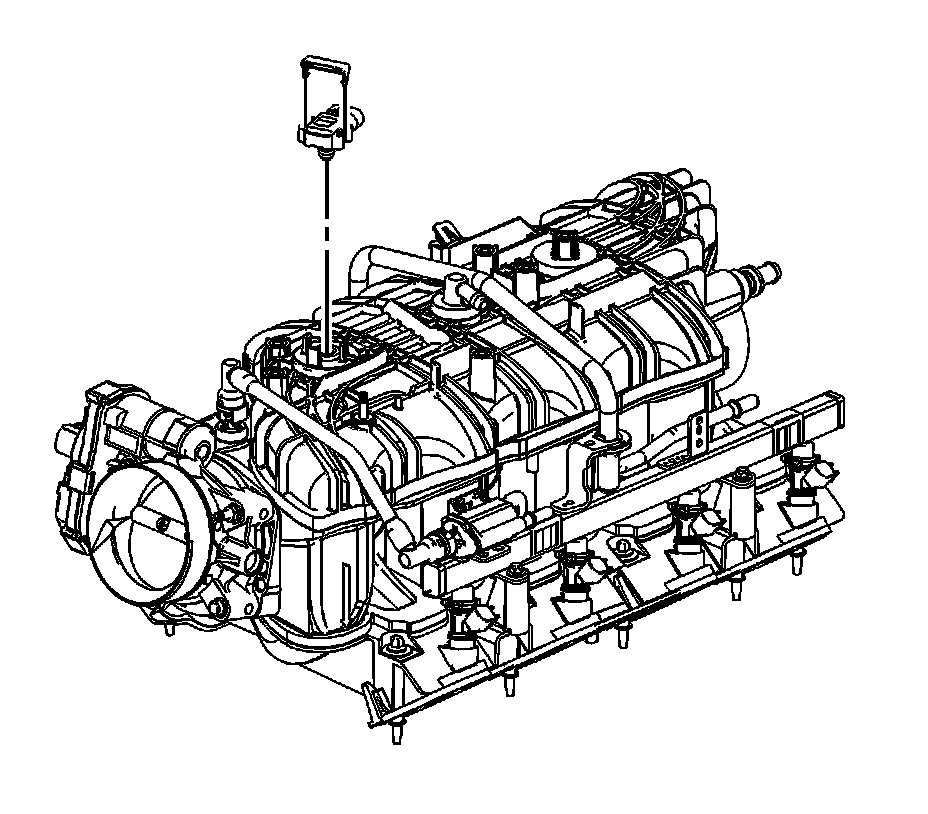

Manifold Pressure/Vacuum Sensor: Service and Repair
MANIFOLD ABSOLUTE PRESSURE SENSOR REPLACEMENT
REMOVAL PROCEDURE

1. Remove the intake manifold sight shield.
2. Disconnect the engine wiring harness electrical connector (4) from the manifold absolute pressure (MAP) sensor.

3. Remove the MAP sensor retainer.
4. Remove the MAP sensor.
INSTALLATION PROCEDURE
IMPORTANT: Lightly coat the MAP sensor seal with clean engine oil before installing the sensor.
1. Install the MAP sensor.
2. Install the MAP sensor retainer.
3. Connect the engine harness wiring electrical connector (4) to the MAP sensor.
4. Install the intake manifold sight shield.